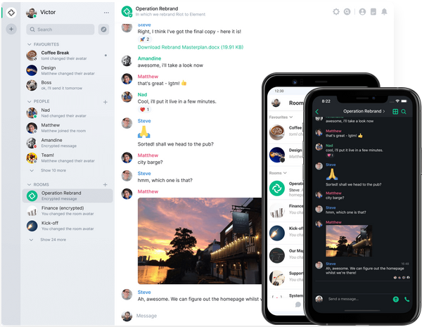

Element

1. What is Element?
Element is a messenger app similar to WhatsApp, SMS, Signal, and Facebook Messenger. The difference is it is more private, and you can use other applications if you want to. In addition it's hard for governments to shut it down since no single company owns it like Facebook or Apple.
2. Why you should care?
Because you value freedom. Think about it. You can be a Gmail user and send an email to a Hotmail user. But you can't send WhatsApp message to a friend that is using Facebook Messenger. Why can't messenger apps be like email apps?
3. How to use Element?
- Install it (It's available on any platform - iPhone, Android, Mac, Windows, Web, and Linux).
- Send me (@oren:matrix.org) a direct message so you won't feel lonely.
- Join groups (it's called rooms) that you are interested in.
- Create a new room (private or public) and invite your friends.